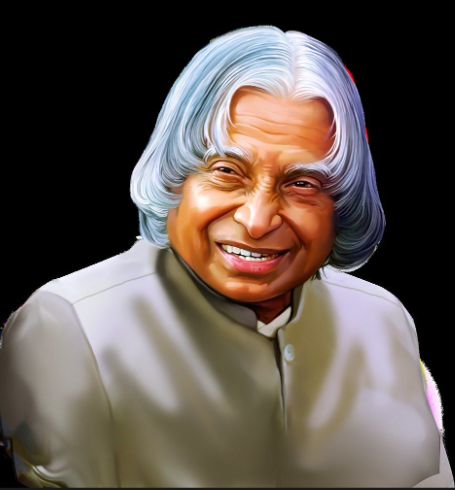

Missile Program
Played a central role in developing India's strategic missile program, earning the title "Missile Man of India."
Tribute Page
1931 - 2015 | President of India | Aerospace Scientist | Teacher of the Nation

Dr. A.P.J. Abdul Kalam dedicated his life to science, innovation, and empowering youth across India and the world.
“Dream, dream, dream. Dreams transform into thoughts and thoughts result in action.”
Born in Rameswaram, Dr. Kalam rose from humble beginnings to become one of India's most beloved leaders. He studied physics and aerospace engineering, then joined the Defense Research and Development Organisation (DRDO) and the Indian Space Research Organisation (ISRO).
He was the chief architect of India's civilian space program and military missile systems, including the Agni and Prithvi missiles. In 2002, he became the 11th President of India, earning admiration for his humility, discipline, and dedication to education.
Beyond science, Dr. Kalam believed in the power of dreams, the importance of youth, and the promise of a developed India built through creativity, hard work, and values.
Played a central role in developing India's strategic missile program, earning the title "Missile Man of India."
Led the successful 1998 nuclear tests that established India as a responsible nuclear power.
Served as the 11th President of India from 2002 to 2007, remaining a voice for youth and education.
Authored inspirational works like "Wings of Fire," "Ignited Minds," and "India 2020."
Click the button below to reveal a thoughtful fact about Dr. Kalam's journey.